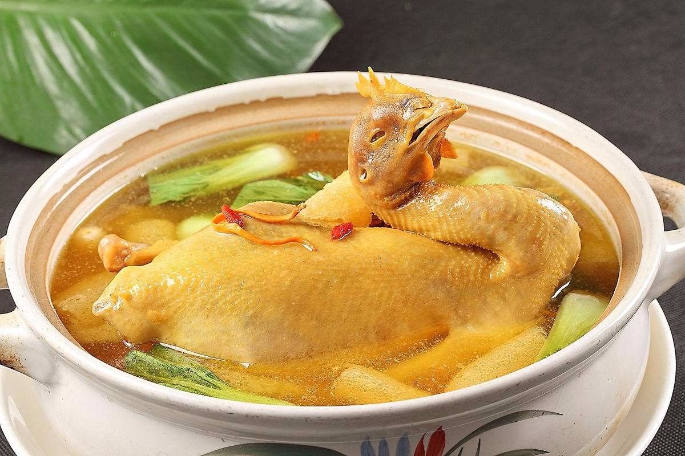
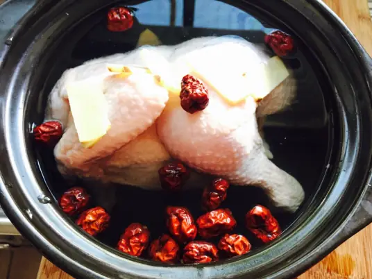
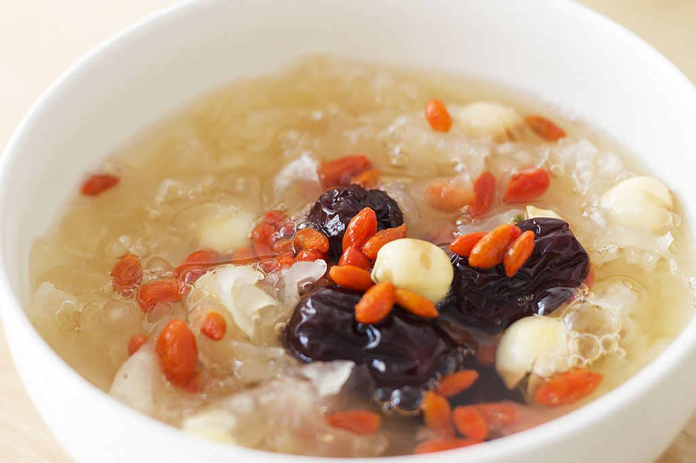
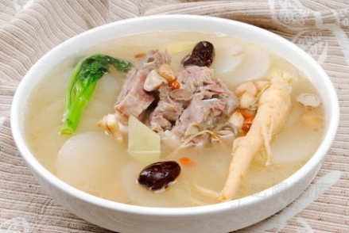

-

补气
党参乌鸡汤：党参乌鸡汤具有补气养血、健脾益肺、补益肝肾、养血安神、滋阴养颜等功效，可以改善乏力气短、脾虚食少、肺虚喘咳、肝肾亏虚、失眠多梦等症。
-

补血
当归红枣鸡汤：补血活血是当归红枣鸡汤的重要功效之一，这种汤品的所用的当归是一种可以补血活血的特色中药材，而红枣也是一种可以益气补血的特色食材，人们食用了用它们炖制的鸡汤以后，能起到十分出色的益气补血功效，对人类的血虚和贫血和手术后缺血等症状都有不错的滋补功效。
-

滋阴
银耳莲子羹：羹浓味甜，口感浓甜润滑，美味可口。此汤具养阴润肺，生津整肠之效，有润肺养胃、美容养颜的功能，适用于伴有涕中带血的鼻咽癌病人和女性朋友。
-

补阳
枸杞羊肉汤：食神在《冬日益肾补阳方：羊肉要分清体质吃》和《喝枸杞黄精汤明目》中，分别介绍了羊肉补肾、枸杞养肝明目的疗效，而今天把这2种食物搭配在一起，配上文火炖一炖，更加适合在冬季经期不调的女性朋友品尝。
食补:全称为“食物调补”，是通过日常饮食摄取天然食材中的营养物质，以调节身体功能、预防疾病、恢复健康的一种方法。它属于中医养生和传统饮食文化的重要组成部分，强调通过“以食养生”的方式满足人体对营养的需求，增强体质，达到“药补不如食补”的健康目标。
-
预防疾病
-
通过膳食营养调节，增强免疫力，预防慢性病（如高血压、糖尿病）。
-
a.例如，秋冬吃羊肉可提高御寒能力，降低感冒风险。
-
恢复健康
-
病后或术后，通过食补加快身体恢复。
-
b.例如，鸡汤配枸杞可帮助补气血、恢复体力。
-
改善体质
-
针对气虚、血虚、寒性、热性体质进行调节，让身体达到平衡状态。
-
美容养颜
-
食补可以改善皮肤状态，延缓衰老。
-
c.例如，常吃富含胶原蛋白的银耳或猪蹄汤，有助于皮肤水润。
强调“食养为主”
通过日常食物的自然属性（寒、热、温、凉）和功能（滋阴、补阳、益气、养血等），来调和身体的阴阳平衡。
相较于药补，食补更温和、持久，不容易产生副作用。
针对性调理
- 气虚体质
多吃益气的食物，如黄芪炖鸡汤、红枣粥。
- 阴虚体质
相较于药补，食补更温和、持久，不容易产生副作用。
- 阳虚体质
多吃温补的食物，如羊肉汤、姜枣茶。
根据个人体质和健康状况，选择相应的食材进行补养。例如：
重视时节变化
- 春季
通过日常食物的自然属性（寒、热、温、凉）和功能（滋阴、补阳、益气、养血等），来调和身体的阴阳平衡。
- 夏季
相较于药补，食补更温和、持久，不容易产生副作用。
- 秋季
侧重滋阴润燥，如雪梨、银耳、蜂蜜。
- 冬季
侧重温补，常用羊肉、枸杞、生姜等温性食材。
食补强调季节性调养，根据不同季节选择适合的食材：
食材天然且多样化
食补注重使用天然食材，如谷物、蔬果、肉类、药食同源食材（如枸杞、红枣、山药）。
食材搭配以营养均衡、相互增益为原则。